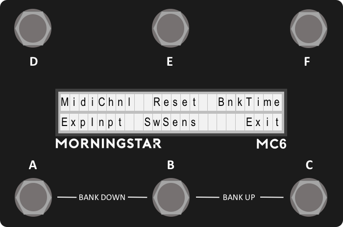

Main Configuration Menu
To access the Controller Settings Menu, hold down Switches [D + F] before powering up the MC6. This menu allow you to edit the global settings for the device.
The display will indicate that it is booting into the configuration page, and the menu below will be displayed:

Factory Reset (Reset)
To do a factory reset, hold down for 2 seconds. The MC6 will show that it is performing a factory reset. All user presets and settings will be reset to factory default when a reset is done.
Set MIDI Channel (MidiCh)
Set the MIDI receive channel for the MC6. The MC6 can receive and respond to messages from external midi controllers. Press Switch A or B to increase or decrease the MIDI channel respectively.
Change Input (ChgInp)
Change Expression Input Type between Aux Switch, Expression or Fixed Sw 1 Setting.
- Aux Switch: Use a stereo cable to connect to an external aux switch to control more presets
- Expression: Connect an expression pedal via a stereo cable (Tip connected to wiper) to engage the expression preset.
- Fixed Sw 1: Similar to the aux switch, but the functions are hard-coded to control the Bank Up, Bank Down and Toggle Page functions without sacrificing any presets.
Switch Sensitivity (SwSens)
Set switch sensitivity. Choose from 1 (least sensitive) to 5 (most sensitive). Pressing Switch A+B together will select 2, while B+C will select 4.
By default, this is set to 3 and should be comfortable for most users. Depending on personal taste, you may adjust sensitivity to help you bank up/down (by stepping on 2 switches at once) more accurately. More sensitive means that the lag between the time when a message is sent out and when the switch is pressed it at its minimum.
Bank Display Time (BnkTime)
This setting adjusts the time it takes to load the next bank. It also correlates with the amount of time the device will display the Bank Number and Name before it loads the main preset page.
The value displayed is in milliseconds.
MIDI Clock (MidiClk)
The MIDI clock setting toggles the persistent MIDI clock function ON and OFF. This setting is related to the MIDI Clock message under MIDI Types. If persistent MIDI is ON, the MIDI Clock message will continue sending a MIDI clock signal when engaged, even when engaging other presets or scrolling through banks. However, if persistent MIDI is OFF, the MIDI clock signals will shut off when an event (like a switch press or expression pedal move) is triggered.